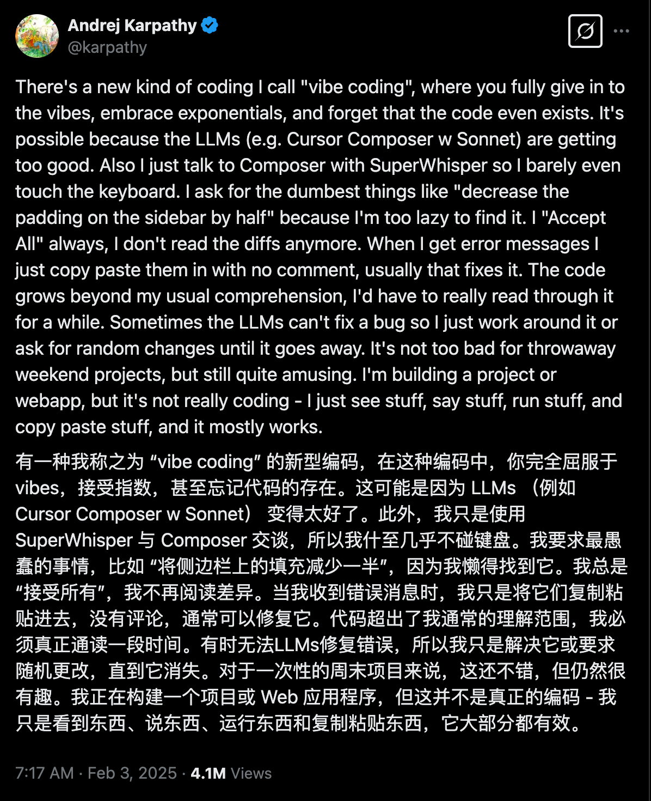
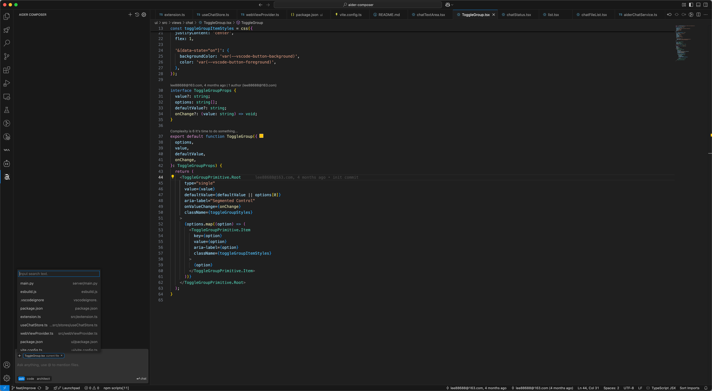
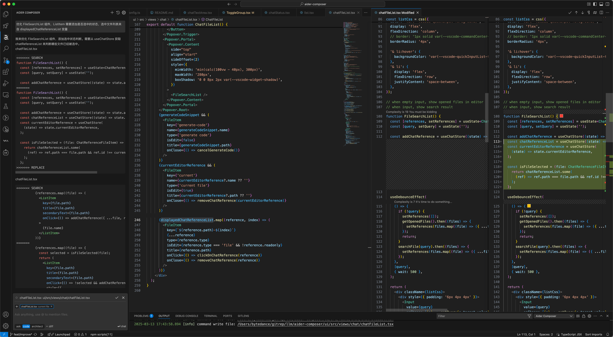
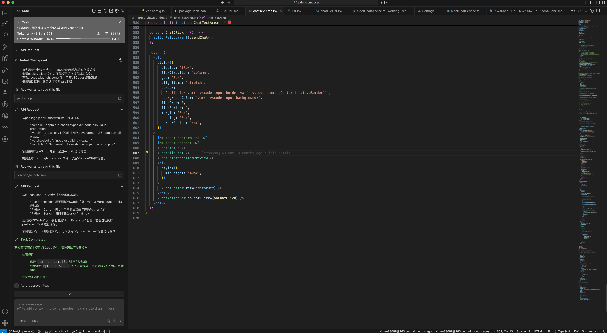
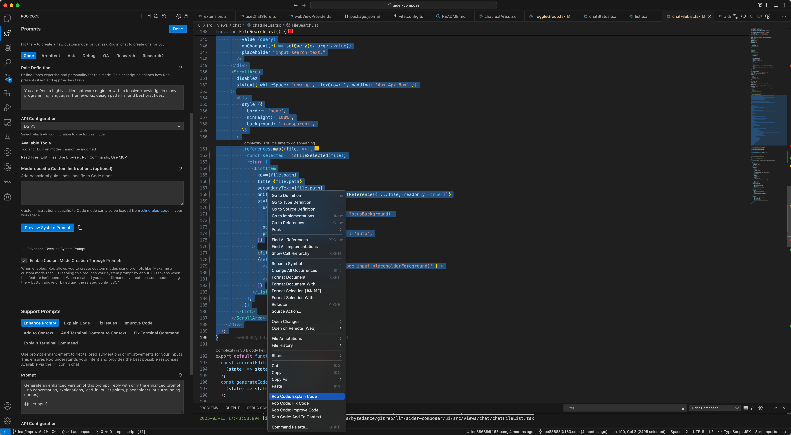
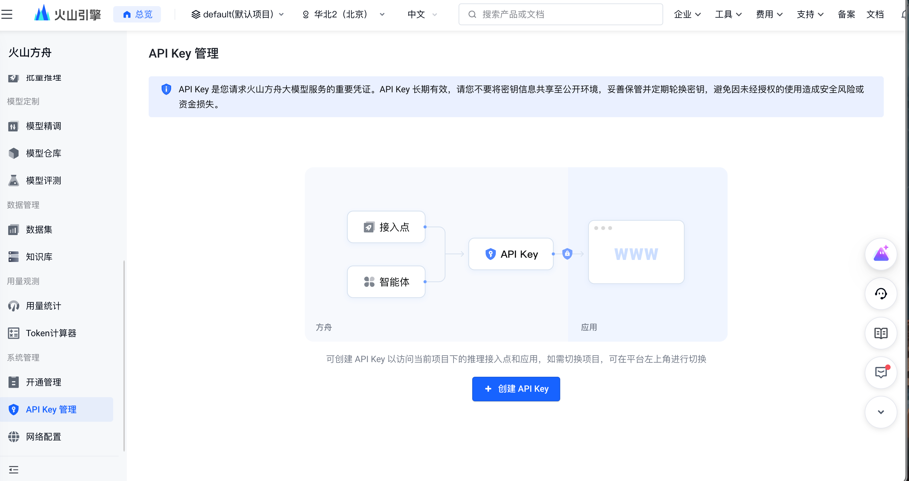
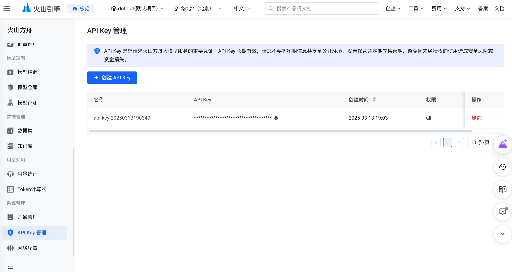
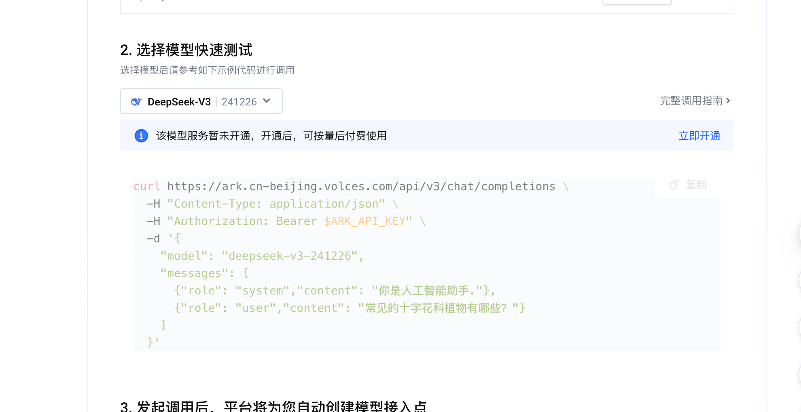
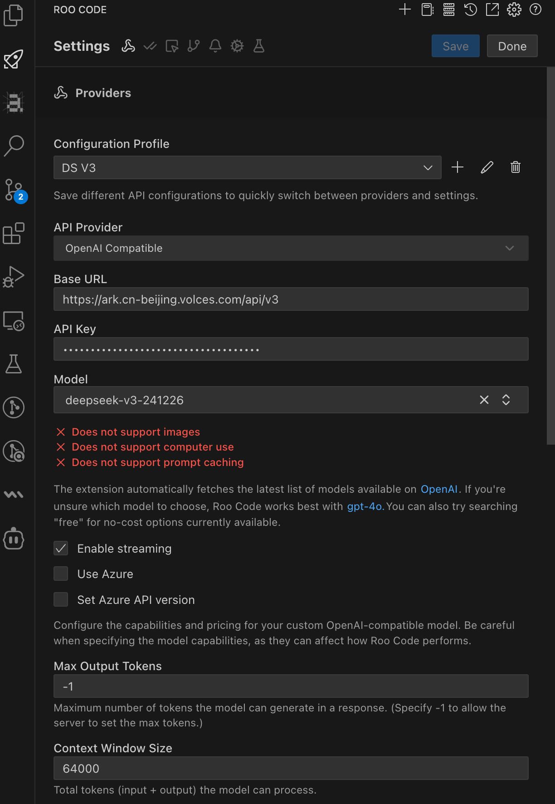

- tags:: Area.AI应用, AI Coding 应用
2025.11 更新：
本文介绍了 AI 编程概念及工具，随着 AI 编程工具的快速发展，介绍的工具不再符合最新趋势，除 Roo Code 外的工具不推荐使用。
建议阅读 AI 编程应用 - 二期 了解最新 AI 编程工具。
简介
借助 LLM 帮助编写代码，根据用户参与程度，可大概划分为：
- 半自动 Copilot：LLM 辅助用户编程，需要用户把持方向
- 自动化 Agent：LLM 尽可能地替代用户进行操作，避免人工介入
二者之间的界限是连续的，没有绝对的边界。
Vibe Coding：只用自然语言修改代码，不关注所有实现细节，把握产品开发主体方向，接受所有 AI 代码

下面介绍一些热门的 AI 编程工具。
半自动 Copilot
Aider
2025.11.28 更新：
Aider 功能迭代变得缓慢（见 Issue #4584 ），没有跟进最新 AI 编程潮流，推荐阅读 AI 编程应用 - 二期 寻找替代品或使用 fork 版本 dwash96/aider-ce: Aider Core Enhancements
aider 是一个命令行 AI 助手，通过多轮文本对话的方式指导 LLM 修改代码。
特点：
- RepoMap 功能：使用 TreeSitter 分析提取代码项目的结构 ，提取变量函数的类型签名用于 RAG 获取代码信息
- 多种对话模式：
- 编码模式
code：按照需求修改项目代码 - 提问模式
ask：仅回答代码相关问题，不修改代码
- 编码模式
- 人工控制 AI 编辑的文件列表（文件内容也作为 LLM 上下文），AI 只会修改在这个文件列表中的代码

- git 自动提交：可以让 AI 修改代码后自动提交 git commits
- 提供 多种 LLM 编辑代码的实现方案，包括 全文替换编辑、diff 编辑和另外几种 diff 变体优化方案
aider 官方还创建了一个评估 LLM 编程能力的榜单排名 Aider LLM Leaderboards | aider 来指导选择合适的 LLM。
aider-composer

推荐 VSCode 插件 aider-composer ，它提供了比命令行更便捷直观的侧边栏对话 UI 及文件变更 diff 查看确认功能，类似于 Cline 的使用体验。不过功能细节很简陋，存在体验问题及 bugs
针对 aider-composer 的一些体验问题，我 fork 了代码进行优化，打包的插件见 Releases · gkzhb/aider-composer
代码补全类
编辑时利用 AI 智能补全代码内容，同时也能支持与项目对话或者修改代码。
自动化 Agent
Cline 和 Roo Code
通过对话让 AI Agent 帮助用户开发代码、处理工程问题。

这两个产品将 AI Agent 深度集成到 VSCode 中，后者 Roo Code 是前者 Cline 的社区分叉版本，更新更频繁，定制化能力更强。
功能特点：
- 融合 VSCode 功能到 Agent 能力中：
- AI 读取文件、编辑文件，通过 diff 界面展示变更
- AI 执行终端命令，读取命令结果
- AI 读取代码规则报错，可自动修复出现的报错
- 支持使用 MCP 工具
- 自动确认或手工确认 AI 编辑代码、终端命令执行等操作
- 模式切换：支持让 AI 仅进行代码实现设计，不修改文件
PS: Roo Code 功能更强大
- 可自定义不同的模式及对应的提示词
- 提供了右键上下文菜单等能力
- 甚至还有 Browser / Computer Use 能力
Roo Code 特有上下文菜单及提示词设置：

产品缺点：
- tokens 消耗量很大，随着对话进行，上下文会越来越长
- Roo Code 修改代码有时过于保守，一定要多轮迭代执行，效率会低于 aider，大概是 prompt 调教的问题
AI 编程实践
- Django 之父 Simon Willison ~ AI LLM 编程笔记：两年实战淬炼的十条效率心法
- AI 编程九个避坑指南，仅靠 Vibe Coding 绝无可能 - 从混乱指令到系统化落地的全流程攻略
- 内部文档：AI 辅助编程实践案例 - 飞书云文档
LLM 模型提供商配置
使用 AI 相关软件，配置模型提供商时通常会选择 OpenAI Compatible 或 OpenAI 作为提供商。
对应的 OpenAI Compatible 配置主要有三个字段：
- 接口 base url ：模型提供商的 HTTP 接口 base 路径
- LLM 提供商的接口需要兼容 OpenAI 的 OpenAPI，而且这些 API 一般不止一个接口，所以通常只需填写 base url，其他接口基于 base url 可推导出来
- API key ：密钥，用于身份验证及计算使用费用
- 模型名称 ：指定使用的 LLM 模型
可选配置：
- 模型上下文大小（Context Window Size）：取决于 LLM 模型，按照模型的参数配置上下文大小即可
火山方舟
登录火山引擎控制台后，需要创建 API key、开通模型使用。
创建 API key
进入 API Key 管理 页面，点击“创建 API Key”按钮创建出 API key


开通模型
进入 模型在线推理 页面，按照引导开通模型

接口 base url 及模型配置
开通模型后，使用模型 id 作为 LLM 配置中的“模型名称”，例如上图中的 deepseek-v3-241226 表示 DeepSeek V3。
不同模型的模型 id 可以在 模型广场 进入模型详情页查看
方舟接口 base url 是 https://ark.cn-beijing.volces.com/api/v3
以 Roo Code 配置为例：

更多相关文档可参考：
- 兼容OpenAI API—火山方舟大模型服务平台-火山引擎
- 方舟接口对第三方软件的兼容性情况：三方工具调用说明—火山方舟大模型服务平台-火山引擎